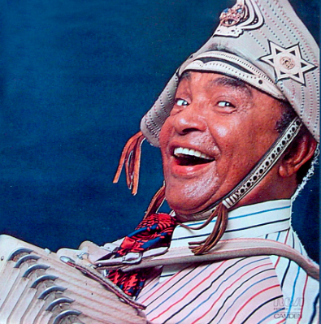

Luiz Gonzaga (1912-1989) foi um músico brasileiro. Sanfoneiro, cantor e compositor,
recebeu o título de "Rei do Baião". Foi responsável pela valorização dos ritmos nordestinos,
levou o baião, o xote e o xaxado, para todo o país. A música "Asa Branca" feita em parceria
com Humberto Teixeira, gravada por Luiz Gonzaga no dia 3 de março de 1947, virou hino do Nordeste brasileiro.